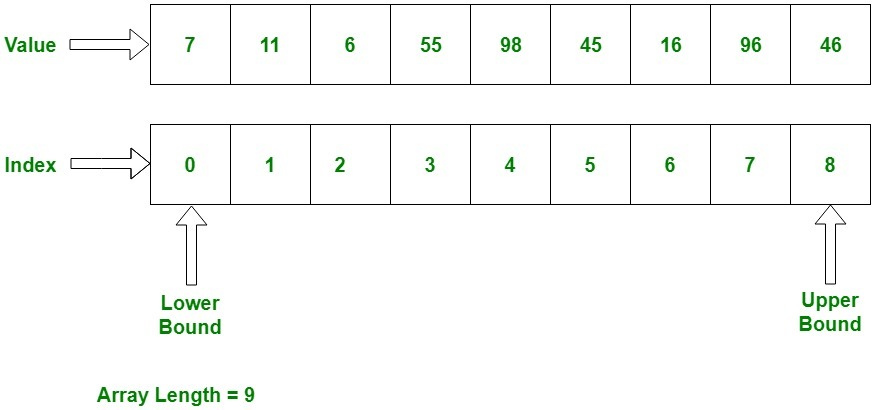
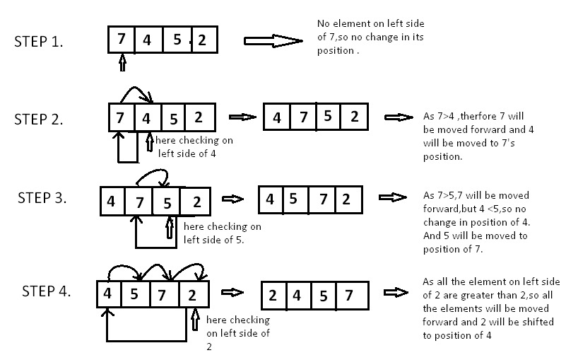

Arrays are used to store multiple values in a single variable, instead of declaring separate variables for each value.
To create an array, define the data type (like int) and specify the name of the array followed by square brackets [].
To insert values to it, use a comma-separated list, inside curly braces:

Is the array always of a fixed size?
In C language, the array has a fixed size meaning once the size is given to it, it cannot be
changed i.e. you can’t shrink it nor can you expand it. The reason was that for expanding if
we change the size we can’t be sure ( it’s not possible every time) that we get the next memory
location to us for free. The shrinking will not work because the array, when declared, gets memory
statically allocated, and thus compiler is the only one that can destroy it.
Array insertion
In this post, we will look into insertion operation in an Array, i.e., how to insert into an Array, such as:
Inserting Elements in an Array at the End
Inserting Elements in an Array at any Position in the Middle
Inserting Elements in a Sorted Array
1. Inserting Elements in an Array at the End
In an unsorted array, the insert operation is faster as compared to a sorted array because we don’t have to care about the position at which the element is to be placed.

Coding implementation of inserting an element at the end:
#include
// Inserts a key in arr[] of given capacity.
// n is current size of arr[]. This
// function returns n + 1 if insertion
// is successful, else n.
int insertSorted(int arr[], int n, int key, int capacity)
{
// Cannot insert more elements if n is
// already more than or equal to capacity
if (n >= capacity)
return n;
arr[n] = key;
return (n + 1);
}
// Driver Code
int main()
{
int arr[20] = { 12, 16, 20, 40, 50, 70 };
int capacity = sizeof(arr) / sizeof(arr[0]);
int n = 6;
int i, key = 26;
printf("\n Before Insertion: ");
for (i = 0; i < n; i++)
printf("%d ", arr[i]);
// Inserting key
n = insertSorted(arr, n, key, capacity);
printf("\n After Insertion: ");
for (i = 0; i < n; i++)
printf("%d ", arr[i]);
return 0;
Row Major Order and Column Major Order
When it comes to organizing and accessing elements in a multi-dimensional array, two prevalent methods
are Row Major Order and Column Major Order. These approaches define how elements are stored in memory
and impact the efficiency of data access in computing.
Row Major Order
Row major ordering assigns successive elements, moving across the rows and then down the next row,
to successive memory locations. In simple language, the elements of an array are stored in a Row-Wise
fashion.
Address of A[I][J] = B + W * ((I – LR) * N + (J – LC))
I = Row Subset of an element whose address to be found,
J = Column Subset of an element whose address to be found,
B = Base address,
W = Storage size of one element store in an array(in byte),
LR = Lower Limit of row/start row index of the matrix(If not given assume it as zero),
LC = Lower Limit of column/start column index of the matrix(If not given assume it as zero),
N = Number of column given in the matrix.
How to find address using Row Major Order?
Given an array, arr[1………10][1………15] with base value 100 and the size of each element is 1 Byte in memory. Find the address of arr[8][6] with the help of row-major order.
Solution:
Given:
Base address B = 100
Storage size of one element store in any array W = 1 Bytes
Row Subset of an element whose address to be found I = 8
Column Subset of an element whose address to be found J = 6
Lower Limit of row/start row index of matrix LR = 1
Lower Limit of column/start column index of matrix = 1
Number of column given in the matrix N = Upper Bound – Lower Bound + 1
= 15 – 1 + 1
= 15
Formula:
Address of A[I][J] = B + W * ((I – LR) * N + (J – LC))
Solution:
Address of A[8][6] = 100 + 1 * ((8 – 1) * 15 + (6 – 1))
= 100 + 1 * ((7) * 15 + (5))
= 100 + 1 * (110)
Address of A[I][J] = 210
Column Major Order
If elements of an array are stored in a column-major fashion means
moving across the column and then to the next column then it’s in column-major order.
To find the address of the element using column-major order use the following formula:
How to find address using Column Major Order?
Given an array arr[1………10][1………15] with a base value of 100 and the size of each element is 1 Byte in memory find the address of arr[8][6] with the help of column-major order.
Solution:
Given:
Base address B = 100
Storage size of one element store in any array W = 1 Bytes
Row Subset of an element whose address to be found I = 8
Column Subset of an element whose address to be found J = 6
Lower Limit of row/start row index of matrix LR = 1
Lower Limit of column/start column index of matrix = 1
Number of Rows given in the matrix M = Upper Bound – Lower Bound + 1
= 10 – 1 + 1
= 10
Formula: used
Address of A[I][J] = B + W * ((J – LC) * M + (I – LR))
Address of A[8][6] = 100 + 1 * ((6 – 1) * 10 + (8 – 1))
= 100 + 1 * ((5) * 10 + (7))
= 100 + 1 * (57)
Address of A[I][J] = 157